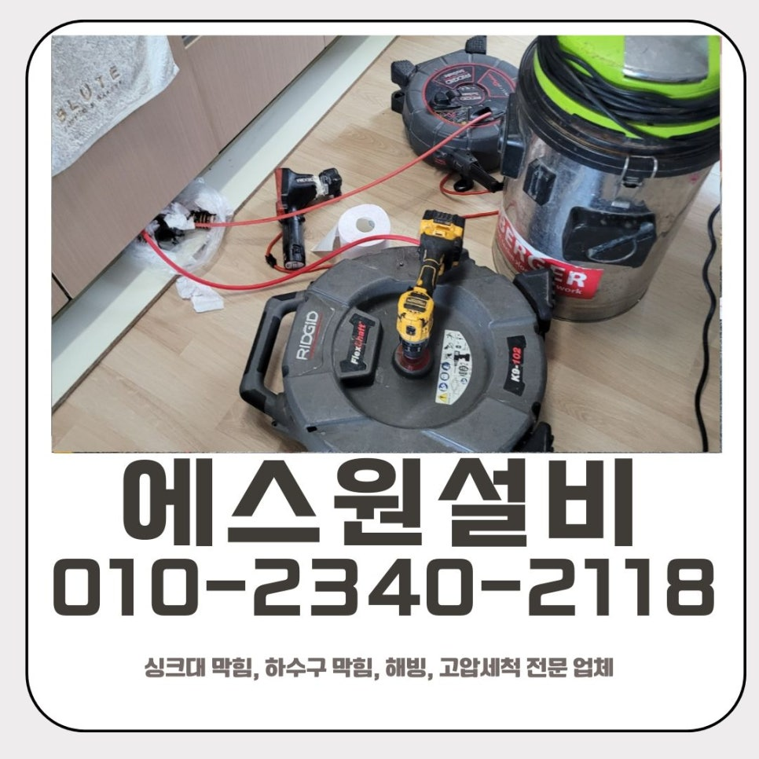
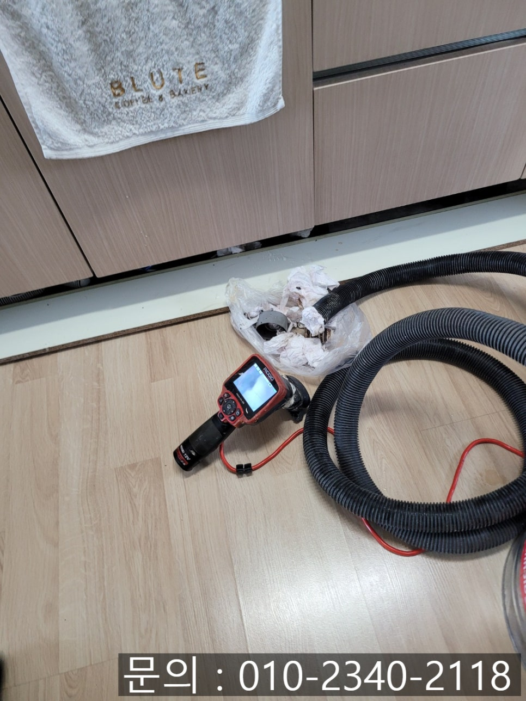
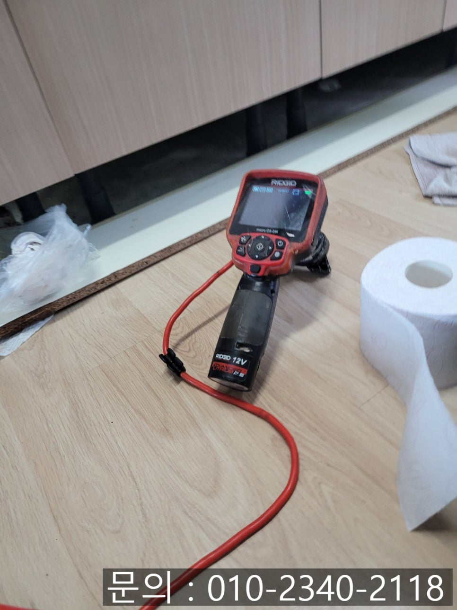
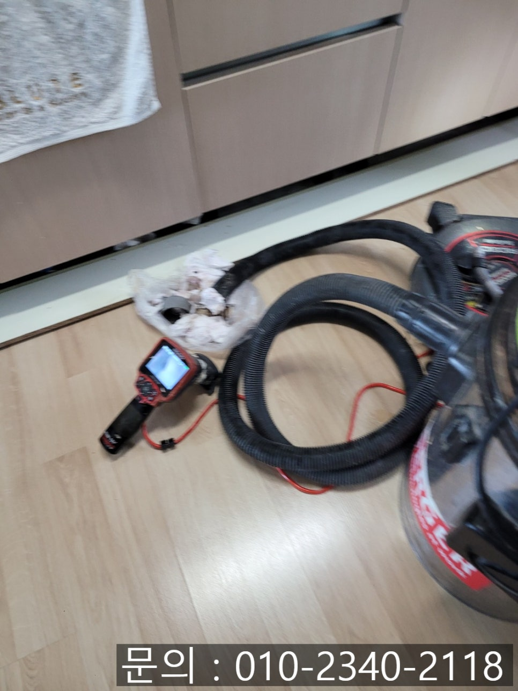
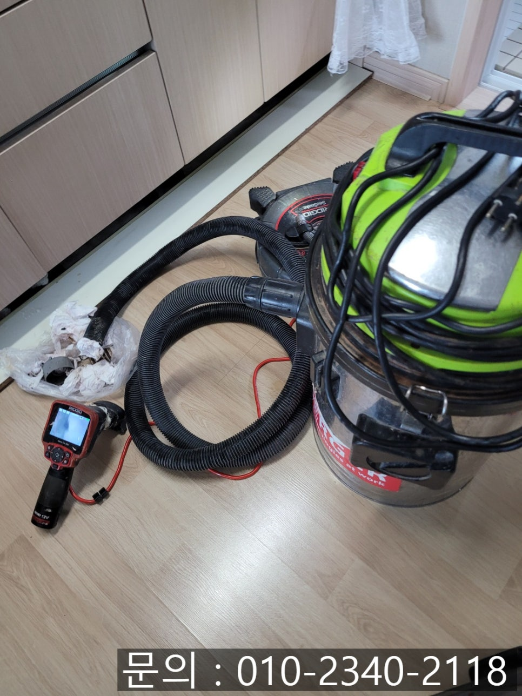
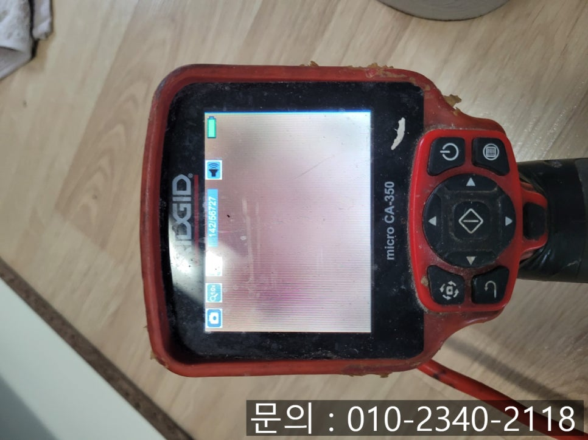
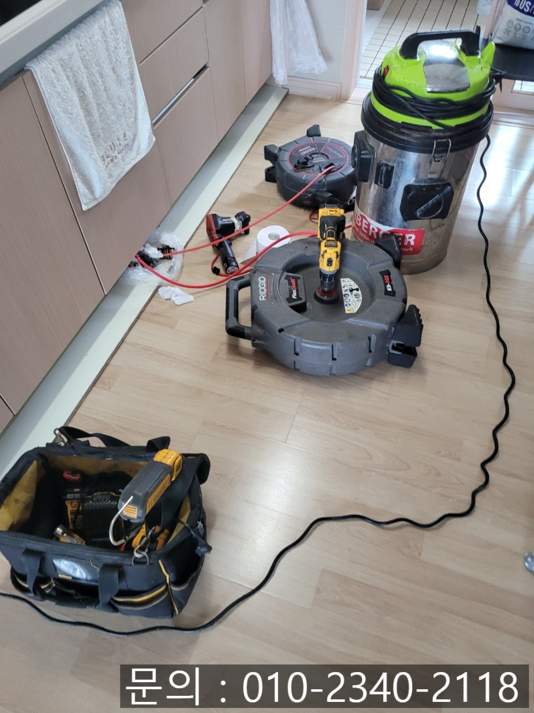

🏠 비봉면 싱크대 막힘 화성 마도면 하수구 역류 뚫는 비용 해결 방법
화성 마도면 싱크대막힘 전문 시공 후기

📋 작업 개요
- 위치: 화성 마도면, 마도면, 화성
- 서비스 유형: 싱크대막힘, 하수구막힘, 배관막힘, 누수수리, 역류해결, 뚫는업체, 배관청소
- 작업 일시: 2025. 8. 17. 10:20
- 업체명: 하수구수사대 (010-5615-2118)
🔍 문제 상황
안녕하세요.
화성 마도면 하수구 역류 뚫는 비용 해결 방법 알려드리는 에스원 설비입니다.
이번에 출동한 곳은 비봉면 싱크대 막힘 현장이었어요. 의뢰인께서는 다급하게 전화를 주셨어요. "싱크대 물이 내려가지 못하고 고여 있고, 역류하면서 냄새가 너무 심하다"라는 상황이었죠. 주방은 가족의 식사를 준비하는 공간이기 때문에 위생이 무엇보다 중요한데, 이런 상태로 오래 두면 악취와 세균 번식이 심각해질 수 있어요.

🔎 원인 분석
💡 전문가 진단: 화성 마도면 하수구 역류 뚫는 비용 해결 방법
고객님과 약속 시간을 정하고, 비봉면 싱크대 막힘 현장으로 방문 드리게 되었어요. 고객님 말씀대로 육안으로도 싱크대에 물이 고여 있는 것을 확인할 수 있었어요. 곧바로 배관 내시경으로 상태를 확인을 시도했어요.
싱크대 막힘을 근본적으로 해결하려면 원인을 정확히 파악하는 것이 가장 먼저입니다. 이를 위해서는 배관 내부를 직접 확인할 수 있는 정밀 점검 장비, 즉 배관 내시경이 꼭 필요합니다. 이 장비를 보유한 업체여야 막힌 위치와 상태를 눈으로 확인하여 작업에 돌입할 수 있습니다.
간혹 이런 장비 없이 내부 상황을 확인하지도 않고 무작정 뚫는 청소 작업을 진행하는 경우가 있어요. 이렇게 하면 일시적으로는 물이 내려가는 것처럼 보일 수 있지만, 실제로는 배관 벽면에 찌꺼기가 그대로 남아 있어 금세 다시 막히게 됩니다. 결국 장비를 통해 정확하게 점검하고 원인을 분석한 후에 그에 알맞게 맞추어 작업을 해야 다시 막히는 일을 막을 수 있습니다.
배관 내시경 카메라 화면에는 음식물 찌꺼기와 기름때가 굳어 형성된 슬러지가 가득 차 있었어요. 싱크대 배관에 한 번 슬러지가 쌓이기 시작하면 점점 더 심하게 막히게 됩니다.

🔧 작업 과정
화성 마도면 하수구 역류 뚫는 비용 해결 방법
고객님께 이 상황을 자세하게 안내해 드리고 플렉스 샤프트 장비를 이용하여 슬러지를 갈아내는 작업을 시작하기로 하였어요. 샤프트 장비는 고속 회전으로 배관 벽면에 붙어 있는 기름때와 찌꺼기, 슬러지를 잘게 부숴줍니다.
중간중간 배관 내시경으로 오염도를 체크하며 여러 차례 반복적으로 샤프트 장비로 갈아내주는 작업을 진행해 주니 서서히 물길이 트이면서 배수가 되는 것을 확인할 수 있었어요.
갈려 나온 찌꺼기들은 석션기로 강하게 흡입하여 배관 밖으로 안전하게 제거했어요. 단순히 막힌 부분만 뚫는 것이 아니라 배관 내부를 깨끗하게 청소하여 다시 막히는 가능성이 없게 만들어줍니다.
비봉면 싱크대 막힘을 해결하고 물을 여러 차례 흘려보았어요. 막힘과 누수 없이 시원하게 내려가고 악취도 확연히 줄어든 것을 확인하였어요.


✅ 작업 완료
요즘은 설비업체가 정말 많지만 모든 업체가 전문 장비를 보유하고 있지는 않습니다. 싱크대가 막히면 혼자 시도하다가 배관을 손상시킬 수도 있으니, 막힘 문제가 생기거나 반복되는 문제가 발생하면 꼭 전문 설비업체인 에스원 설비의 도움을 받으시길 추천드릴게요.
경기도 화성시 효행로 1060 10층 1004호a046




⚠️ 베란다 누수 및 방수 관리 방법
- ✅ 비가 많이 올 때 창틀 주변이나 아래층 천장에 얼룩이 생기는지 정기적으로 확인해 보세요.
- ✅ 우수관 주변 실리콘 마감이 들뜨거나 깨진 틈새가 있는지 손상 여부를 수시로 체크하세요.
- ✅ 베란다 바닥 타일의 줄눈(메지)이 소실되면 그 틈으로 물이 침투하여 누수가 유발됩니다.
- ✅ 누수 의심 증상 발견 시 방치하면 아래층 손실이 커지므로 즉시 전문가의 진단을 받으십시오.
💡 핵심 정리
- 확실한 장비 작업(내시경 점검 및 샤프트 스케일링)으로 원인을 뿌리 뽑습니다.
- 작업 후 1년 이내에 동일한 부위 재발 시 100% 무상 A/S 서비스를 보장합니다.
- 서울 · 경기 · 인천 전 지역에 24시간 언제든 긴급 출동할 수 있도록 항시 대기 중입니다.
❓ 자주 묻는 질문 (FAQ)
🚨 화성 마도면 싱크대막힘 문제로 고민이신가요?
정확한 원인 진단과 확실한 시공으로 재발 없는 해결을 약속드립니다.
24시간 긴급 출동 | 서울 · 경기 · 인천 전지역 | 1년 내 재발 시 무상 A/S